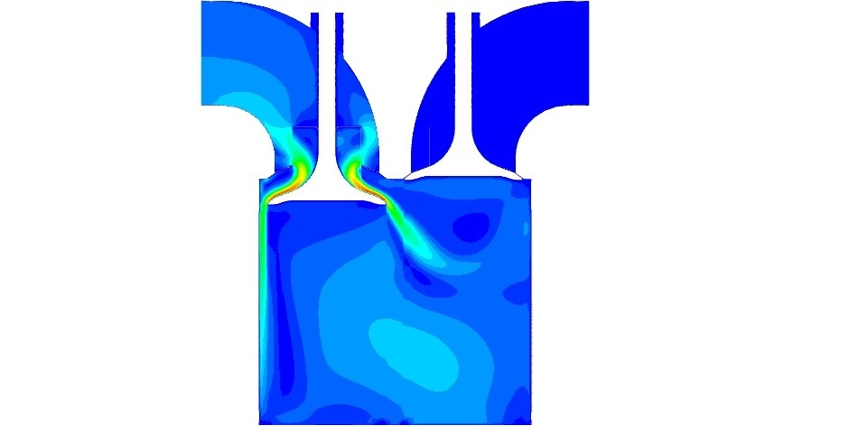

Internship at the ICER, IISc
Internship summary

It was late August 2020, I had just been selected for a six month internship at Amazon at the time. I wasn't keen on accepting this particular position and I was not permitted to attend any more interviews due to my University's Placement policys. This is when I wrote Dr Pramod Kumar at IISc to enquire whether there were any positions open at his lab. My internship began from September 2020 and lasted till January 2021. During this time I began working on a SCo2 Brayton cycle engine which was in development.
Initially the Internship took the form of weekly assignments. It began with simple tasks and then progressed to more involved problems. My first assignment was to use Python to model certain cases of a slider crank mechanism. Then I learnt to design using Creo Parametric (I was only familiar with SolidWorks up till this point).